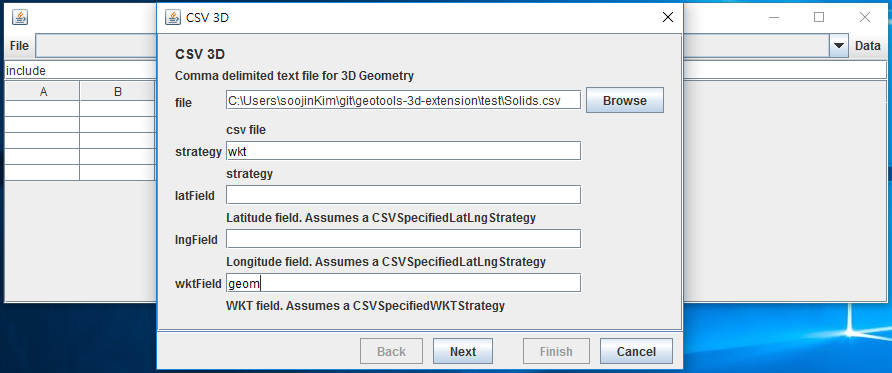

Quickstart Manual¶
Quickstart Manual는 3차원 지리공간을 처음 접하는 자바 개발자를 대상으로 설명한다. 자바와 이클립스 설치 및 프로젝트 생성은 GeoTools 페이지를 참고하라 GeoTools Eclipse Quickstart.
- 프로젝트를 생성한 후 pom.xml파일을 열어라.
- GeoTools-3d-extention을 사용하기 위해서 pom.xml파일에 다음을 참고하여 dependency를 추가하라.
1 2 3 4 5 6 7 8 9 10 11 12 13 14 15 16 17 18 19 20 21 22 23 24 25 26 27 28 29 30 31 32 33 34 35 36 37 38 39 40 41 42 43 44 45 46 47 48 49 50 51 52 53 54 55 56 57 58 59 60 61 62 63 64 65 66 67 68 69 70 71 72 | <project xmlns="http://maven.apache.org/POM/4.0.0" xmlns:xsi="http://www.w3.org/2001/XMLSchema-instance"
xsi:schemaLocation="http://maven.apache.org/POM/4.0.0 http://maven.apache.org/xsd/maven-4.0.0.xsd">
<modelVersion>4.0.0</modelVersion>
<artifactId>your project name</artifactId>
<parent>
<groupId>org.geotools</groupId>
<artifactId>geotools-iso</artifactId>
<version>15-SNAPSHOT</version>
</parent>
<properties>
<project.build.sourceEncoding>UTF-8</project.build.sourceEncoding>
</properties>
<dependencies>
<!-- Provides support for ISO Feature -->
<dependency>
<groupId>org.geotools</groupId>
<artifactId>gt-main-iso</artifactId>
<version>${project.version}</version>
</dependency>
<!-- Provides support for CSV -->
<dependency>
<groupId>org.geotools</groupId>
<artifactId>gt-csv-iso</artifactId>
<version>${project.version}</version>
</dependency>
<!-- Provides support for PostGIS. Note the different groupId -->
<dependency>
<groupId>org.geotools.jdbc</groupId>
<artifactId>gt-jdbc-postgis-iso</artifactId>
<version>${project.version}</version>
</dependency>
<!-- Provides GUI components -->
<dependency>
<groupId>org.geotools</groupId>
<artifactId>gt-swing</artifactId>
<version>${project.version}</version>
</dependency>
<dependency>
<groupId>org.geotools</groupId>
<artifactId>gt-cql</artifactId>
<version>${project.version}</version>
</dependency>
<dependency>
<groupId>junit</groupId>
<artifactId>junit</artifactId>
<version>3.8.1</version>
<scope>test</scope>
</dependency>
</dependencies>
<build>
<plugins>
<plugin>
<groupId>org.apache.maven.plugins</groupId>
<artifactId>maven-surefire-plugin</artifactId>
<configuration>
<forkCount>3</forkCount>
<reuseForks>true</reuseForks>
<argLine>-Xmx1024m -XX:MaxPermSize=256m</argLine>
</configuration>
</plugin>
</plugins>
</build>
</project>
|
- 다음의 코드를 새로 생성한 프로젝트에 추가하라.
1 2 3 4 5 6 7 8 9 10 11 12 13 14 15 16 17 18 19 20 21 22 23 24 25 26 27 28 29 30 31 32 33 34 35 36 37 38 39 40 41 42 43 44 45 46 47 48 49 50 51 52 53 54 55 56 57 58 59 60 61 62 63 64 65 66 67 68 69 70 71 72 73 74 75 76 77 78 79 80 81 82 83 84 85 86 87 88 89 90 91 92 93 94 95 96 97 98 99 100 101 102 103 104 105 106 107 108 109 110 111 112 113 114 115 116 117 118 119 120 121 122 123 124 125 126 127 128 129 130 131 132 133 134 135 136 137 138 139 140 141 142 143 144 145 146 147 148 149 150 151 152 153 154 155 156 157 158 159 160 161 162 163 164 165 166 167 168 169 170 171 172 173 174 175 176 177 178 179 180 181 182 183 184 185 186 187 188 189 190 191 192 193 194 195 196 197 198 199 200 201 202 203 204 205 206 207 208 209 210 211 212 213 214 215 216 217 218 219 220 221 222 223 224 225 226 227 228 229 230 231 232 233 234 | import java.awt.BorderLayout;
import java.awt.Dimension;
import java.awt.event.ActionEvent;
import java.io.IOException;
import java.util.ArrayList;
import java.util.Map;
import javax.swing.ComboBoxModel;
import javax.swing.DefaultComboBoxModel;
import javax.swing.JComboBox;
import javax.swing.JFrame;
import javax.swing.JMenu;
import javax.swing.JMenuBar;
import javax.swing.JOptionPane;
import javax.swing.JScrollPane;
import javax.swing.JTable;
import javax.swing.JTextField;
import javax.swing.table.DefaultTableModel;
import org.geotools.data.DataStore;
import org.geotools.data.DataStoreFactorySpi;
import org.geotools.data.DataStoreFinder;
import org.geotools.data.FeatureWriter;
import org.geotools.data.ISODataUtilities;
import org.geotools.data.Transaction;
import org.geotools.data.csv.iso.CSVDataStoreFactory;
import org.geotools.data.postgis3d.PostgisNGDataStoreFactory;
import org.geotools.data.simple.SimpleFeatureCollection;
import org.geotools.data.simple.SimpleFeatureSource;
import org.geotools.factory.Hints;
import org.geotools.feature.ISOFeatureFactoryImpl;
import org.geotools.feature.simple.ISOSimpleFeatureTypeBuilder;
import org.geotools.feature.simple.SimpleFeatureBuilder;
import org.geotools.filter.text.cql2.CQL;
import org.geotools.filter.text.cql2.CQLException;
import org.geotools.referencing.crs.DefaultGeographicCRS;
import org.geotools.swing.action.SafeAction;
import org.geotools.swing.data.JDataStoreWizard;
import org.geotools.swing.table.FeatureCollectionTableModel;
import org.geotools.swing.wizard.JWizard;
import org.opengis.feature.simple.SimpleFeature;
import org.opengis.feature.simple.SimpleFeatureType;
import org.opengis.filter.Filter;
import org.opengis.geometry.ISOGeometryBuilder;
import org.opengis.geometry.primitive.Solid;
public class App extends JFrame{
private DataStore dataStore;
private JComboBox featureTypeCBox;
private JTable table;
private JTextField text;
private static ISOGeometryBuilder builder;
public static void main(String[] args) throws Exception {
Hints h = new Hints();
h.put(Hints.GEOMETRY_VALIDATE, false);
h.put(Hints.CRS, DefaultGeographicCRS.WGS84_3D);
builder = new ISOGeometryBuilder(h);
JFrame frame = new App();
frame.setVisible(true);
}
public App() {
setDefaultCloseOperation(JFrame.EXIT_ON_CLOSE);
getContentPane().setLayout(new BorderLayout());
text = new JTextField(80);
text.setText("include"); // include selects everything!
getContentPane().add(text, BorderLayout.NORTH);
table = new JTable();
table.setAutoResizeMode(JTable.AUTO_RESIZE_OFF);
table.setModel(new DefaultTableModel(5, 5));
table.setPreferredScrollableViewportSize(new Dimension(500, 200));
JScrollPane scrollPane = new JScrollPane(table);
getContentPane().add(scrollPane, BorderLayout.CENTER);
JMenuBar menubar = new JMenuBar();
setJMenuBar(menubar);
JMenu fileMenu = new JMenu("File");
menubar.add(fileMenu);
featureTypeCBox = new JComboBox();
menubar.add(featureTypeCBox);
JMenu dataMenu = new JMenu("Data");
menubar.add(dataMenu);
pack();
fileMenu.add(new SafeAction("Open csvfile...") {
public void action(ActionEvent e) throws Throwable {
connect(new CSVDataStoreFactory());
}
});
fileMenu.add(new SafeAction("Connect to PostGIS database...") {
public void action(ActionEvent e) throws Throwable {
connect(new PostgisNGDataStoreFactory());
}
});
fileMenu.add(new SafeAction("Insert Solid to PostGIS database...") {
public void action(ActionEvent e) throws Throwable {
insertTable();
}
});
fileMenu.addSeparator();
fileMenu.add(new SafeAction("Exit") {
public void action(ActionEvent e) throws Throwable {
System.exit(0);
}
});
dataMenu.add(new SafeAction("Get features") {
public void action(ActionEvent e) throws Throwable {
filterFeatures();
}
});
}
private void connect(DataStoreFactorySpi format) {
JDataStoreWizard wizard = new JDataStoreWizard(format);
int result = wizard.showModalDialog();
if (result == JWizard.FINISH) {
Map<String, Object> connectionParameters = wizard.getConnectionParameters();
try {
dataStore = DataStoreFinder.getDataStore(connectionParameters);
if (dataStore == null) {
JOptionPane.showMessageDialog(null, "Could not connect - check parameters");
}
updateUI();
} catch (IOException e) {
// TODO Auto-generated catch block
e.printStackTrace();
} catch (Exception e) {
// TODO Auto-generated catch block
e.printStackTrace();
}
}
}
private void insertTable() {
String typeName = "oneSolid";
ArrayList<Solid> al = ISODataUtilities.getSolids(builder);
ISOSimpleFeatureTypeBuilder b = new ISOSimpleFeatureTypeBuilder();
b.setCRS(DefaultGeographicCRS.WGS84_3D);
b.setName( typeName );
b.add("loc", Solid.class);
SimpleFeatureType schema = b.buildFeatureType();
SimpleFeatureBuilder builder = new SimpleFeatureBuilder(schema, new ISOFeatureFactoryImpl());
builder.add( al.get(0) );
SimpleFeature feature = builder.buildFeature( "fid.1" );
try {
dataStore.createSchema((SimpleFeatureType) schema);
FeatureWriter<SimpleFeatureType, SimpleFeature> fw = dataStore.getFeatureWriterAppend(
schema.getTypeName(), Transaction.AUTO_COMMIT);
SimpleFeature newFeature = fw.next();
newFeature.setAttributes(feature.getAttributes());
fw.write();
fw.close();
updateUI();
} catch (IOException e) {
System.out.println(e.getMessage());
e.printStackTrace();
} catch (Exception e) {
e.printStackTrace();
}
}
private void updateUI() {
ComboBoxModel cbm;
try {
cbm = new DefaultComboBoxModel(dataStore.getTypeNames());
featureTypeCBox.setModel(cbm);
} catch (IOException e) {
e.printStackTrace();
}
table.setModel(new DefaultTableModel(5, 5));
}
private void filterFeatures() {
String typeName = (String) featureTypeCBox.getSelectedItem();
SimpleFeatureSource source;
try {
source = dataStore.getFeatureSource(typeName);
Filter filter = CQL.toFilter(text.getText());
SimpleFeatureCollection features = source.getFeatures(filter);
FeatureCollectionTableModel model = new FeatureCollectionTableModel(features);
table.setModel(model);
} catch (IOException | CQLException e) {
// TODO Auto-generated catch block
System.out.println(e.getMessage());
e.printStackTrace();
}
}
}
|
- 위의 어플리케이션을 실행하면 당신은 CSV 파일을 열거나 PostGIS에 연결함으로써 3차원 DataStore을 만들 수 있다.

6-1. CSV 파일 DataStore을 만들어 보자. 우선 Open csv file을 클릭하고, 예제 데이터를 열어라.
7-1. CSV DataStore를 생성하는 데 필요한 설정은 다음과 같다. strategy는 기하가 파일에 어떻게 표현되어 있는지를 나타낸다. 만약 파일이 wkt(well known text)형식의 칼럼을 가지고 있어 기하를 해당 칼럼에 저장하고 있다면, strategy에 ‘wkt’라고 입력하라. 만약 파일이 WGS84좌표의 포인트를 두 개의 칼럼으로 각각 lattitude와 longitude를 저장하고 있다면, strategy에 ‘latlng’라고 입력하라. 만약 파일이 기하를 가지고 있지 않다면, 당신은 strategy를 입력하지 않아도 된다.
만약 당신이 wkt를 입력하였다면, wkt형식의 칼럼 이름을 wktField에 입력하라. 만약 당신이 latlng을 입력하였다면, lattitude, longitude 칼럼의 이름을 각각 latField, lngField에 입력하라.
8-1. DataStore에 있는 데이터를 보고싶다면, getfeature 버튼을 눌러라.

CSV DataStore로부터 getfeature함수를 적용한 결과는 다음과 같다.

6-2 이번에는 PostGIS DataStore를 만들어 보자. 우선 Connect to PostGIS database를 클릭한다.

7-2 PostGIS DataStore를 생성하는 데 필요한 설정은 다음과 같다. 비밀번호 이후 설정은 옵션이므로 나머지는 입력하지 않고, finish버튼을 눌러도 무방하다.

8-2 Insert Solid to PostGIS database버튼을 누르면 PostGIS 데이터베이스에 oneSolid라는 이름으로 id와 geometry를 칼럼으로 가지는 테이블이 하나 생기고, Solid 데이터 하나가 들어간다.

insert의 결과를 다음과 같이 확인할 수 있다.

dropdownlist에는 연결된 데이터베이스의 테이블들을 볼 수 있다. insert버튼을 누른 후에 새로 생성된 oneSolid테이블이 dropdownlist에 나타난 것을 확인할 수 있다. 해당 테이블의 데이터를 보기 위해서 dropdownlist에서 oneSolid테이블이 선택된 채로 getfeature 버튼을 누른다.

PostGIS DataStore로부터 getfeature함수를 적용한 결과는 다음과 같다.